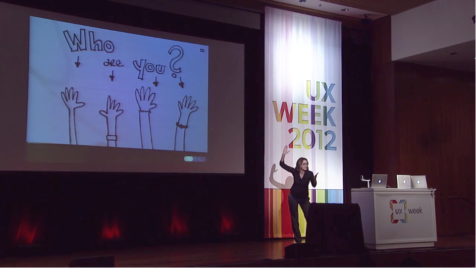

Speaking
From research to sketchnoting to user experience, Veronica speaks on a variety of topics at events across the US.
A Nicer Kind of Interrogation
Whatever your role at your job, you need to ask questions. Veronica everyone to take the lessons she's learned from user experience research and apply them to their everyday conversations.
Presentations
- Presentation at DCWW Code(Her) Conference 2014, 13 September 2014: A Nicer Kind of Interrogation (Conference Website, Slide deck)
The Self-Aware Researcher
UX research can be difficult and a bit scary. In this presentation, Veronica encourages researchers to take control of their growth.
Presentations
- Upcoming presentation at Midwest UX 2014, 24 October 2014: The Self-Aware Researcher (Description, Slide deck)
- Presentation at 2014 IA Summit, 29 March 2014: The Self-Aware Researcher (Description, Slide deck)
Introduction to Sass
Sass brings superpowers to CSS. Veronica walks through the most basic and important features of Sass, and then explains their place in the big picture.
Presentations
- Workshop for DC Web Women Code(Her) Workshops, 14 January 2014: Intro to Syntactically Awesome Style Sheets (Sass) (Slide deck, Example code)
Sketchnoting
Inspired by the sketchoting of Binaebi Akah and Mike Rhode, Veronica has spread the word about how and why to start taking these visual notes during presentations.
Presentations
- Workshops at Sketchcamp Grand Rapids 2013, 19 July 2013: Sketchnoting in the Deep End (Event website)
- Presentation at Sketchcamp Grand Rapids 2013, 19 July 2013: Learning to Sketch through Sketchnoting (Event website)
- Presentation at IxDA DC, 28 August 2012: How and Why to Start Sketchnoting (Event website)
- Presentation at UX Week 2012, 24 March 2012: How and Why to Start Sketchnoting (Video)(Description)
- Workshop at Midwest UX 2012, 31 May 2012: Let's Sketchnote! with Binaebi Akah and Charlene McBride (Summary and slides)(Sketchnote Army post)
- Presentation at IA Summit 2012, 24 March 2012: Why and How to Start Sketchnoting (Slide deck)
Publications
- Guest Post for the Sketchnote Army, 9 May 2013: How to Start Sketchnoting (Blog post)
- Article for the Bulletin of the Association for Information Science and Technology, October/November 2012: How to Start Sketchnoting (Article)
- Podcast on Radio Johnny with Jeff Parks, 24 September 2012: Sketching Out a Greater Understanding (Podcast)
- Podcast for LDNIA Podcast, 2 April 2012: Special Edition from IA Summit 12 (Podcast & Summary)
Community involvement
- Sketchnote Army Field Marshall for the IA Summit 2013, April 2012: How to Start Sketchnoting (Announcement and Flickr pool)
User Experience Design
From mobile design to sketching as a process, Veronica speaks on a variety of user experience design topics.
Presentations
- Discussion at Mobile UXCamp DC 2013, 14 September 2013: Native App Reviews — Bring your App! with James Melzer
- Guest lecturer at Information Architecture & the User Experience at the Graduate School, with instructor Thom Haller, 2 May 2012: Sketching and User Experience
- Guest lecturer at INFM 702 Users and Use Context at the University of Maryland, with instructor Vera Rhoads, 18 April 2013: Sketching and the User Experience (Program website)
Research in Rwanda
After spending 13 days moderating interviews and usability tests at teacher training schools in Rwanda, Veronica presented three stories to inspire any UX researcher.
Presentations
- Presentation at The Big Redux DC, 30 April 2011: UX Research in the Real World (Slideshare)
- Presentation at Midwest UX Conference, 9 April 2011: UX Research in the Real World (Slideshare) (PDF) (Talk description)
- Poster at IA Summit 2011, 1 April 2011: UX Research in the Real World: Stories from Rwanda (PDF)
- Presentation at UXCamp DC 2011, 8 January 2011: My Rwandan User Experience
If you would like a Word, PDF, or Pages version of my resume, please send me a note.